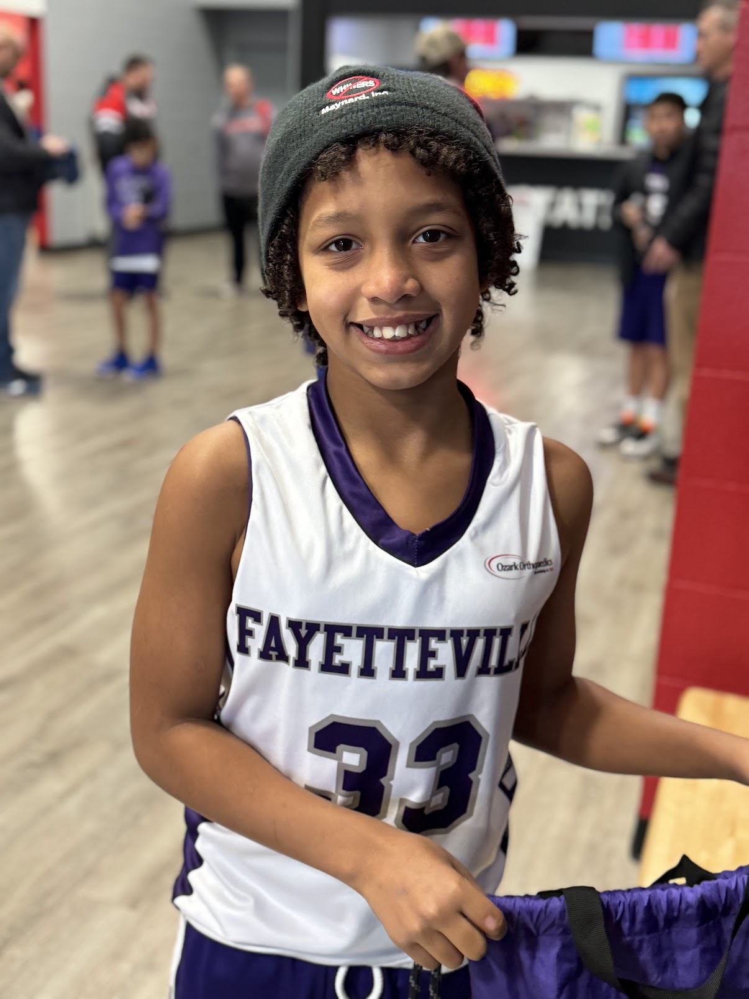

Da'Marius spent the winter focused on recovery and preparation after a busy fall season.
The time off helped him return refreshed and stronger for spring basketball, where he
played an important role in helping his team capture the championship.
Basketball - Summer 2026
Summer 2026 Highlights
Basketball - Winter 2026
Winter basketball provided another opportunity for Da'Marius to sharpen his skills,
compete against strong opponents, and continue developing his game.
Sports & Fishing
Sports have always been a big part of Da'Marius' life. Whether he's on the basketball
court, football field, or out on the water fishing, or winning contests at the Farmer's Market, he brings energy, focus, and a
competitive spirit to everything he does.

Additional Basketball Highlights
Cooking & Learning
From helping in the kitchen to learning new recipes, Da'Marius enjoys discovering
how food is made and taking pride in creating something from scratch.
Arts, Crafts & 3D Printing
Creativity comes naturally to Da'Marius. Through arts, crafts, and 3D printing,
he enjoys bringing ideas to life while learning patience and problem-solving.
Family & Responsibility
Mars is always willing to lend a hand. Whether helping care for younger family
members or assisting Grandma at work, he consistently demonstrates responsibility,
kindness, and maturity.